34. Crankshaft and Bearing Cleaning and Inspection
Crankshaft and Bearings Cleaning and Inspection
Tools Required
^ J 7872 Magnetic Base Dial Indicator Set
^ J 43690 Rod Bearing Checking Tool
^ J 43690-100 Rod Bearing Checking Tool - Adapter Kit
Cleaning Procedure
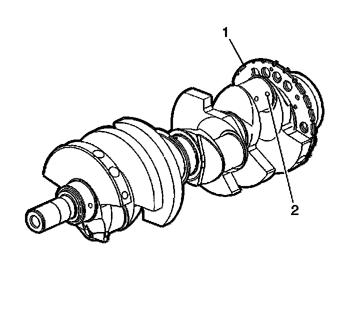
Important: Use care when handling the crankshaft. Avoid damage to the bearing surfaces or the lobes of the crankshaft position (CKP) reluctor ring. Damage to the teeth of the CKP reluctor ring may affect on-board diagnostics (OBD) II system performance.
1. Clean the crankshaft with solvent.
2. Thoroughly clean all oil passages (2) and inspect for restrictions or burrs.
Caution: Refer to Safety Glasses Caution.
3. Dry the crankshaft with compressed air.
Inspection Procedure
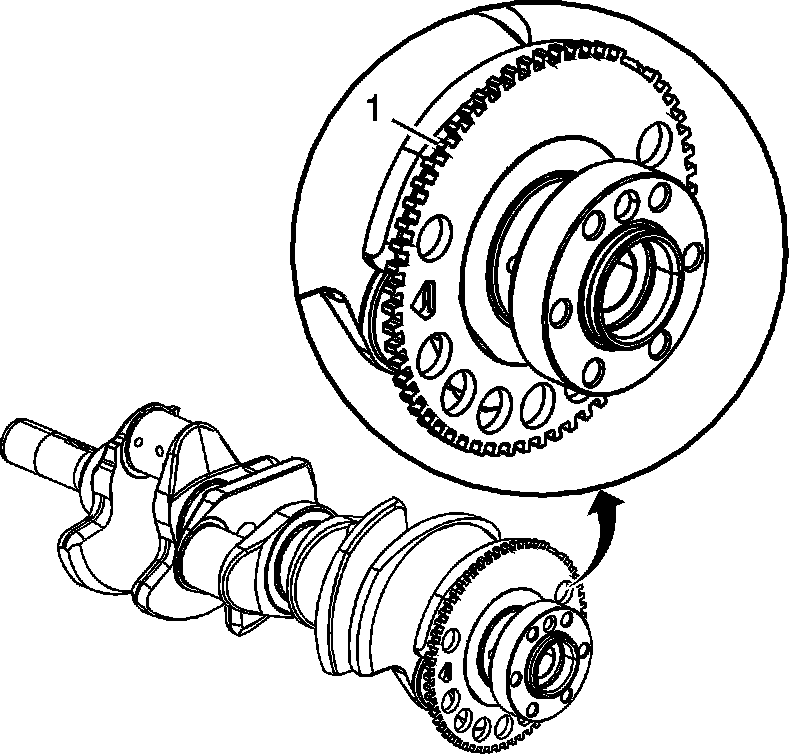
Important: The reluctor ring teeth should not have imperfections on the rising or falling edges. Imperfections of the reluctor ring teeth may affect OBD II system performance.
1. Inspect the CKP reluctor ring teeth (1) for damage.
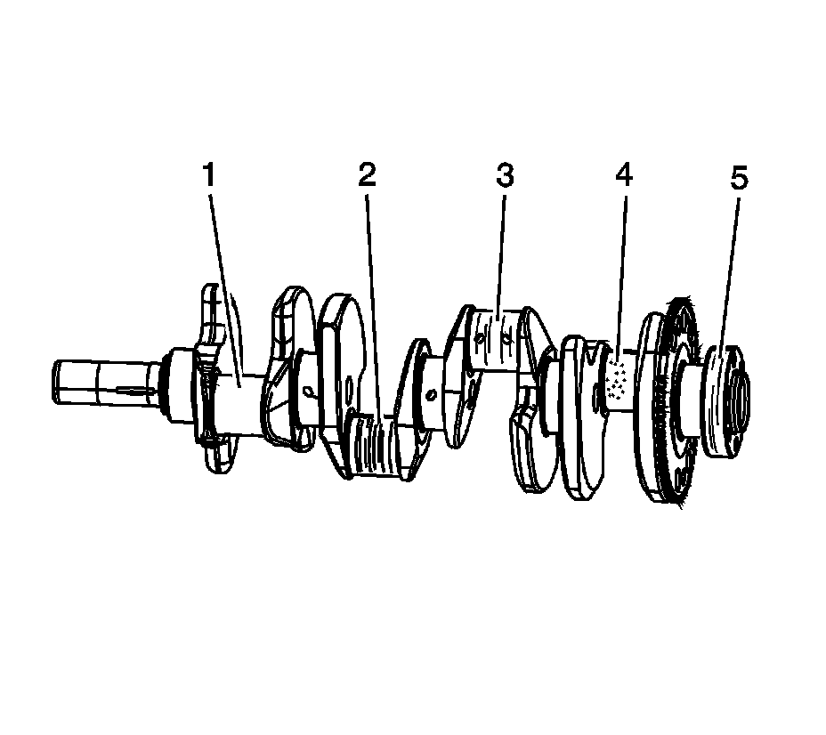
2. Inspect the crankshaft journals for wear.
Journals should be smooth (1) with no signs of scoring, wear, or damage.
3. Inspect the crankshaft journals for grooves or scoring (2).
4. Inspect the crankshaft journals for scratches or wear (3).
5. Inspect the crankshaft journals for pitting or imbedded bearing material (4).
6. Inspect the crankshaft rear oil seal surface (5) for grooves or scoring.
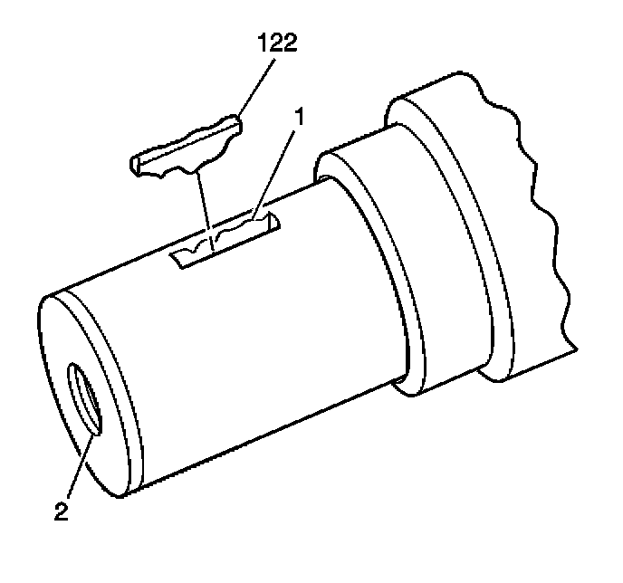
7. Inspect the crankshaft key (122), keyway (1), and threaded hole (2) for damage.
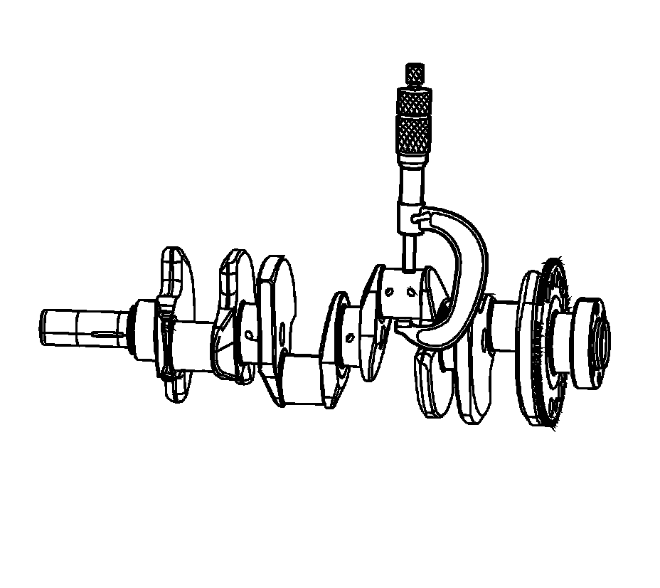
8. Measure the connecting rod journals for out-of-round and taper.
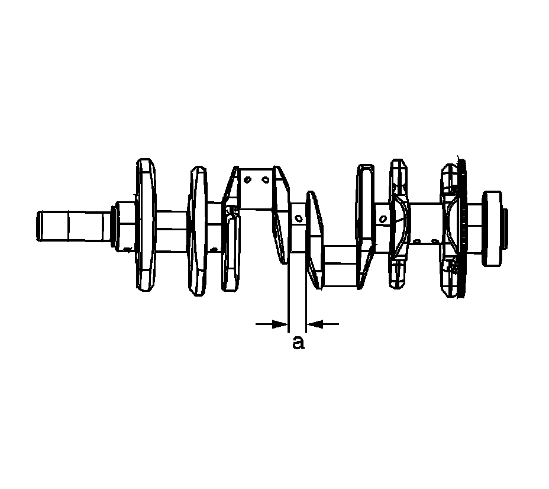
9. Measure the crankshaft thrust wall width.
A crankshaft with a thrust wall width in excess of 26.2 mm (1.0315 in) (a) must be replaced.
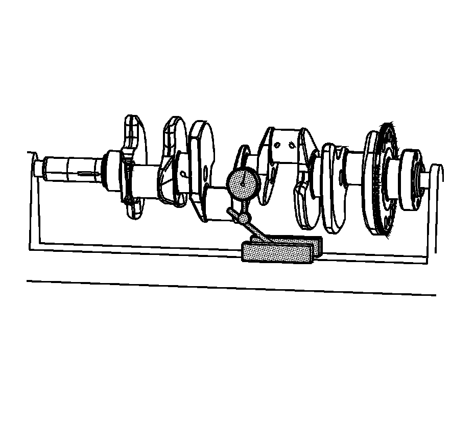
10. Measure the crankshaft runout.
Use wooden V-blocks or a fixture to support the crankshaft on the front and rear journals.
11. Use the J 7872 in order to measure the crankshaft runout at the front and rear intermediate journals.
12. Use the J 7872 in order to measure the runout of the crankshaft rear flange.
13. Use the J 7872 in order to measure the runout of the crankshaft position reluctor ring. Reluctor ring runout should be measured 1.0 mm (0.04 in) below the ring teeth.
If the reluctor ring has runout in excess of 0.7 mm (0.028 in), replace the crankshaft.
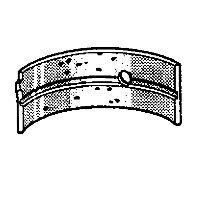
14. Inspect crankshaft bearings for craters or pockets. Flattened sections on the bearing halves also indicate fatigue.
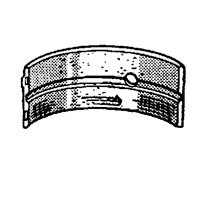
15. Inspect the crankshaft bearings for excessive scoring or discoloration.
16. Inspect the crankshaft bearings for dirt or debris imbedded into the bearing material.
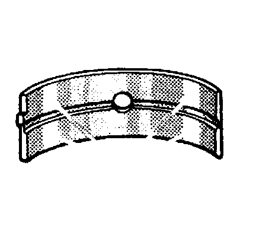
17. Inspect the crankshaft bearings for improper seating, indicated by bright, polished sections of the bearing.
If the lower half of the bearing is worn or damaged, both upper and lower halves should be replaced.
Generally, if the lower half is suitable for use, the upper half should also be suitable for use.
Measuring Main Bearing Clearance - Gaging Plastic Method
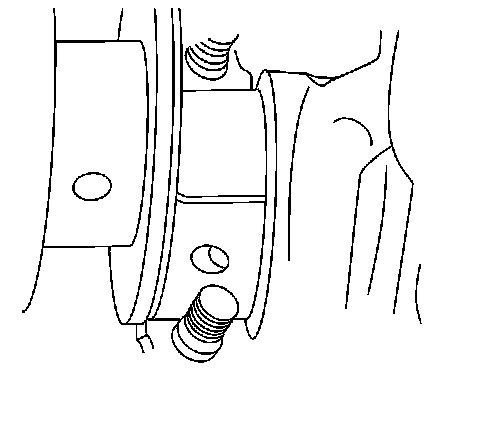
Important:
^ The crankshaft main bearings are a precision insert type. Main bearing caps are machined with the engine block, for proper clearance, and cannot be shimmed or filed for bearing fit. If the clearances are found to be excessive, new bearings and/or engine block and cap repair or replacement may be required.
^ Do not rotate the crankshaft while gaging plastic is between the crankshaft journal and the bearing surface.
^ The crankshaft bearing clearances are critical. Excessive bearing clearance may affect crankshaft position sensor signals and may affect OBD II system operation.
^ Remove the bearing cap side bolts prior to cap removal.
Remove the bearing caps, bearing half, and bolts. Refer to Crankshaft and Bearings Removal.
1. Install gaging plastic onto the crankshaft journal. Install the gaging plastic the full width of the crankshaft bearing journal.
2. Install the bearing caps, bearing half, and bolts.
3. Remove the bearing caps, bearing half, and bolts.
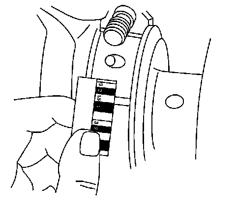
4. Using the scale supplied with the plastic gaging kit, measure the gaging plastic at its widest area.
^ If the gaging plastic shows irregularity in the journal, exceeding 0.025 mm (0.001 in), remove the crankshaft and measure the journal with a micrometer.
^ If clearance cannot be brought to specifications, replace the crankshaft or engine block as required. Refer to Engine Mechanical Specifications.
Measuring Connecting Rod Bearing Clearance - Gaging Plastic Method
Important:
^ Connecting rod bearings are a precision insert type. Connecting rods are of a powdered metal design and cannot be shimmed or filed for bearing fit. If clearances are found to be excessive, a new bearing and/or connecting rod is required.
^ Do not rotate the crankshaft while gaging plastic is between the crankshaft journal and the bearing surface.
Remove the bearing cap, bearing half, and bolts.
1. Install the gaging plastic onto the connecting rod bearing journal. Install the gaging plastic the full width of the journal.
2. Install the bearing cap, bearing half, and bolts. Refer to Piston, Connecting Rod, and Bearing Installation.
3. Remove the bearing cap, bearing half, and bolts. Refer to Piston, Connecting Rod, and Bearing Removal.
4. Using the scale supplied with the plastic gaging kit, measure the gaging plastic at its widest area.
Measuring Connecting Rod Bearing Clearance - Using J 43690/J 43690-100
J 43690 and J 43690-100 have been developed as a more accurate method to measure connecting rod bearing clearances. The instructions below provide an overview of tool set-up and usage. For more detailed information, refer to the tool instruction sheets supplied by the tool manufacturer.
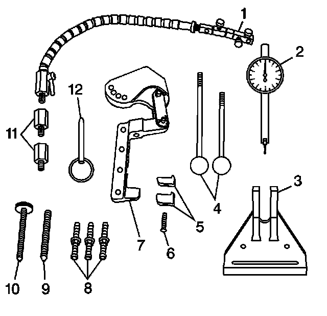
J 43690 Rod Bearing Checking Tool
^ J 43690-20 Swivel Base (1)
^ J 43690-19 Dial Indicator (2)
^ J 43690-2 Base (3)
^ J 43690-5, J 43690-6 Handle (4)
^ J 43690-10, J 43690-11 Foot (5)
^ 280307 Screw (6)
^ J 43690-1 Pivot Arm Assembly (7)
^ J 43690-3, J 43690-7, J 43690-8 Screws (8)
^ 280319 Screw (9)
^ 280311 Screw (10)
^ J 43690-17, J 43690-18 Adapter (11)
^ 280310 Pin (12)
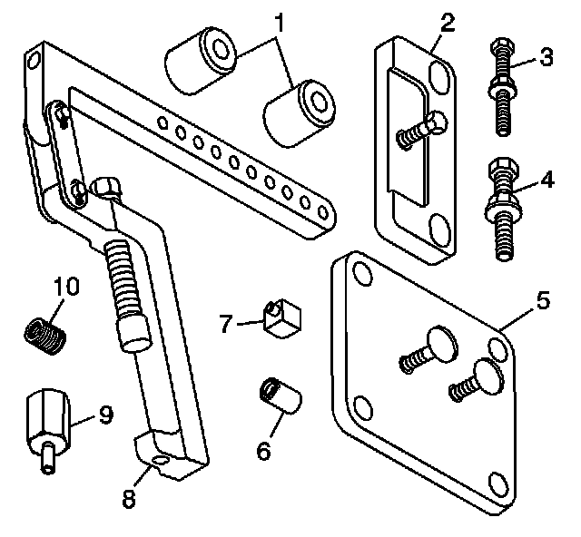
J 43690-100 Rod Bearing Checking Tool - Adapter Kit
^ J 43690-104 Spacer (1)
^ J 43690-105 Retainer Plate (2)
^ 505478 Bolt (3)
^ 511341 Bolt (4)
^ J 43690-106 Retainer Plate (5)
^ J 43690-107 Cap (6)
^ J 43690-102 Foot (7)
^ J 43690-101 Pivot Arm Assembly (8)
^ J 43690-103 Adapter (9)
^ 505439 Adapter (10)
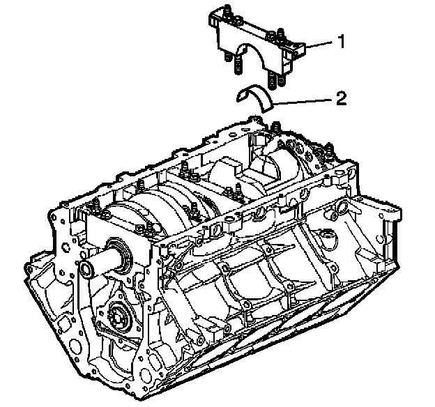
Important: The crankshaft must be secure, with no movement or rotation, in order to obtain an accurate reading.
1. Rotate the crankshaft until the journal/connecting rod to be measured is in the 12 o'clock position.
2. Remove a bearing cap and bolts (1).
3. Remove the bearing half (2).
4. Insert a piece of paper card stock onto the crankshaft journal.
5. Install the bearing half (2) and cap and bolts (1). Refer to Fastener Tightening Specifications.
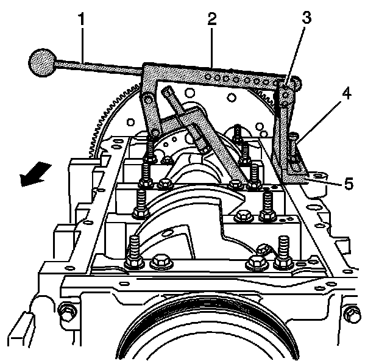
6. Install the following:
1. J 43690-2 (5)
2. J 43690-3 (4)
3. J 43690-101 (2)
4. 280310 (3)
5. J 43690-5 (1)
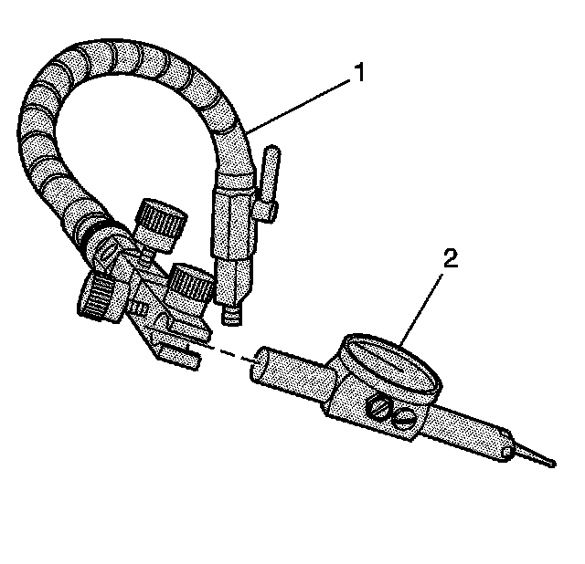
7. Install the swivel base (1) and dial indicator (2).
8. Adjust per the manufacturers instructions and measure the connecting rod bearing clearance.
A connecting rod with a clearance in excess of 0.076 mm (0.003 in) is considered excessive. Service components, as required.